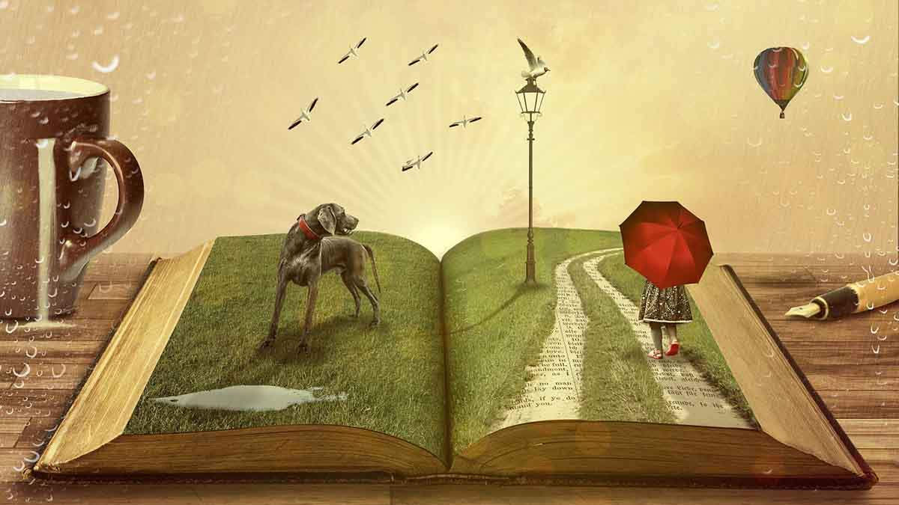
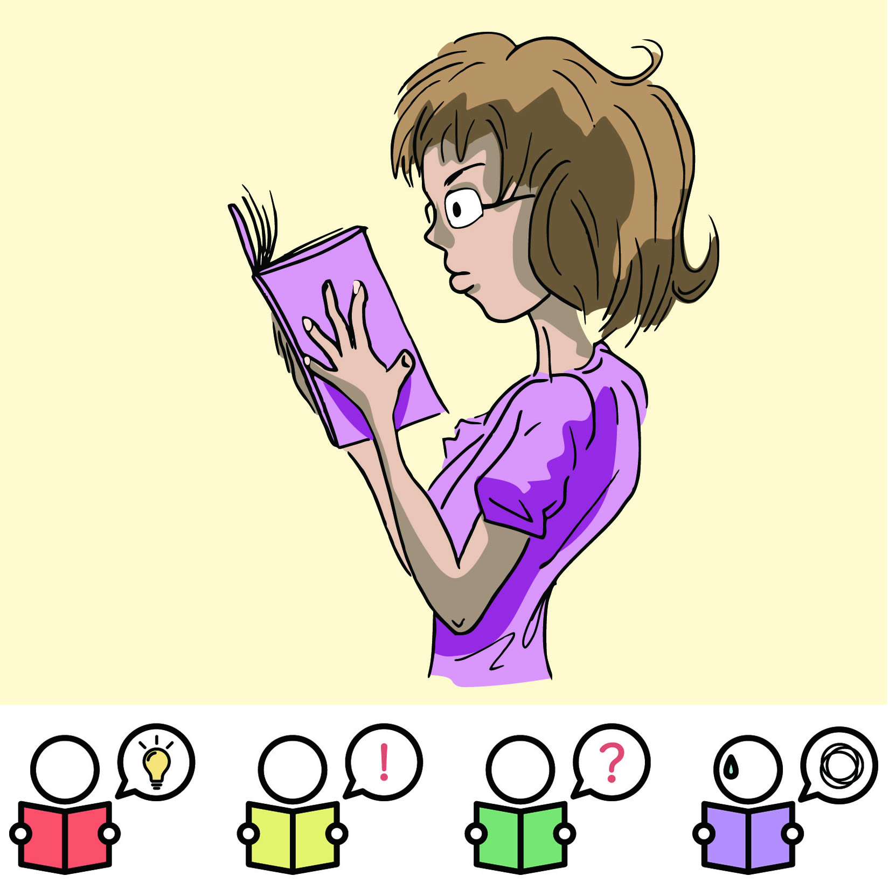
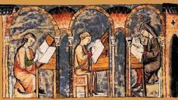
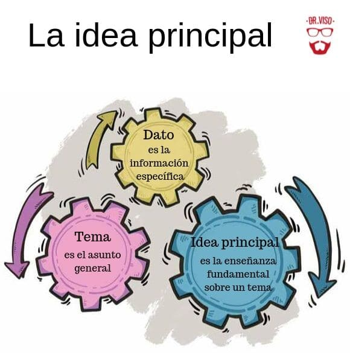
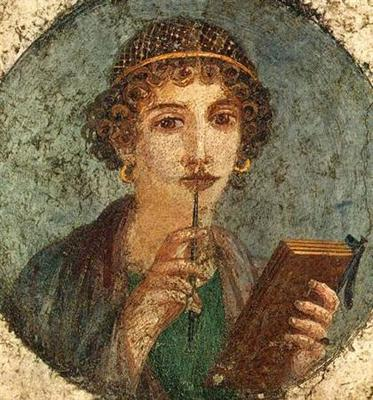

La literatura es una de las bellas artes y una de las más antiguas formas de expresión artística, caracterizada, según el Diccionario de la Real Academia Española, por la “expresión verbal”. De esta forma, es aquel arte que alcanza sus fines estéticos mediante la palabra, que puede ser oral, pero es mayormente escrita.
Los Textos de las Pirámides de Egipto, que también se consideran literatura, hablan del viaje del alma a la otra vida en el Campo de Juncos y estas obras, a diferencia de la literatura naru de Mesopotamia, presentaban este tema como verdadero. La cultura religiosa egipcia se basaba en la realidad de la otra vida y el papel que jugaban los dioses en el viaje eterno de cada uno, del que la vida terrenal no era sino una parte. La Iliada de Homero narra la famosa guerra de diez años entre los griegos y los troyanos, mientras que la Odisea narra el viaje de regreso del gran héroe Odiseo a su casa después de la guerra, a su amada esposa Penélope de Ítaca, y esto, al igual que las otras obras mencionadas, reforzaba los valores culturales sin importar lo que hubiera pasado o dejado de pasar en la guerra de Troya.

Lectura comprensiva
La lectura comprensiva tiene por objetivo la interpretación y comprensión crítica de un texto, donde el lector es un ente activo en la lectura, entiende el mensaje, se hace preguntas, lo analiza y loo critica.
Identificación de palabras y frases: Reconocer y comprender el significado de las palabras y cómo se combinan en oraciones y párrafos.
Comprensión del significado global: Entender el tema principal, las ideas secundarias y las relaciones entre ellas.
Construcción de inferencias:Llenar los vacíos de información y extraer conclusiones basadas en el texto y los conocimientos previos.

Origen del idioma español
El español es una lengua romance, es decir, derivada del latín, pero en la actualidad también conservamos rasgos de las lenguas que se hablaban en la Península antes de la conquista romana. Además, muchas otras lenguas han influido en el desarrollo del español desde que el castellano apareció en la Edad Media.
Latín vulgar: La base del español es el latín vulgar, una variante del latín hablado por el pueblo, que se extendió por la península ibérica con la romanización.
Evolución en la península: Tras la caída del Imperio Romano, el latín vulgar evolucionó de manera diferente en cada región, dando lugar a los distintos dialectos romances, entre ellos el castellano.
Crecimiento del castellano: El castellano, originado en la región de Castilla, fue ganando terreno sobre otros dialectos debido a la influencia política y militar de Castilla.
Estandarización: La estandarización del castellano como lengua oficial y literaria se consolidó con figuras como Alfonso X el Sabio, quien impulsó su uso en la corte y en la literatura.

Análisis verbal
El análisis verbal se refiere al estudio de la función del lenguaje y la comunicación desde una perspectiva conductual, centrándose en cómo el lenguaje opera como una forma de comportamiento. En esencia, se trata de entender cómo las palabras y frases son utilizadas por las personas y cómo estas emisiones verbales influyen en el entorno y son influenciadas por él.
Análisis morfológico: Identificación de las partes de una palabra (raíz, prefijos, sufijos) y su categoría gramatical (sustantivo, verbo, adjetivo, etc.).
Análisis sintáctico: Estudio de la función de las palabras dentro de una oración y cómo se relacionan entre sí (sujeto, predicado, complementos).
Análisis semántico: Comprensión del significado de las palabras, frases y oraciones, incluyendo la interpretación de diferentes niveles de significado (literal, inferencial, crítico).
Comprensión lectora: Proceso de extraer significado de un texto, identificando la idea principal, los detalles relevantes y las relaciones entre ellos.
La idea principal en la comprensión lectora
La idea principal en la comprensión lectora es el concepto central o el mensaje más importante que el autor intenta transmitir en un texto. Es la afirmación clave que da sentido a todo el contenido y que, si se elimina, hace que el texto pierda su significado principal. En esencia, es la respuesta a la pregunta: "¿De qué trata realmente este texto?".
Resumen:La idea principal condensa el contenido más importante del texto en una sola oración o idea.
Importancia: Si se elimina la idea principal, el texto pierde sentido o su mensaje central se ve afectado.
Explicación:La idea principal suele ser apoyada por ideas secundarias que la explican, detallan o ejemplifican.
Explicitación:
En algunos casos, la idea principal puede estar escrita explícitamente en el texto, generalmente al principio o al final de un párrafo, mientras que en otros casos puede ser implícita, requiriendo que el lector la infiera.
Oración: La idea principal se expresa a menudo como una oración completa, a diferencia del tema que puede ser una frase nominal.

Roma y su literatura
LLa literatura romana abarca la producción escrita en latín durante la antigua Roma, extendiéndose desde sus inicios hasta la caída del Imperio romano y más allá. Se caracteriza por la influencia de la literatura griega, pero también por la originalidad y desarrollo de géneros como la épica, la lírica, el teatro (especialmente la sátira) y la prosa, incluyendo la oratoria y la historiografía.
Épica: La "Eneida" de Virgilio es la obra épica más importante, narrando la fundación de Roma a través de las aventuras de Eneas.
Lírica: Horacio y Catulo son poetas líricos destacados, conocidos por sus poemas sobre temas personales, amorosos y morales.
Sátira: Un género propio de los romanos, la sátira criticaba la sociedad y la política de forma mordaz, con autores como Horacio y Juvenal.
Tragedia: Séneca es el autor trágico más importante, adaptando temas mitológicos griegos y explorando la psicología humana.
Historia:Julio César (con sus "Comentarios") y Tito Livio (autor de "Ab Urbe Condita") son importantes historiadores, aportando versiones diferentes de la historia romana.

Géneros literarios
Los géneros literarios son horizontes de expectativas de lectura, es decir, etiquetas conceptuales que sirven para darle al lector una idea de lo que contiene un libro o de qué clase de obra literaria se trata. De allí que los géneros sirvan también a la hora de organizar el material literario de una biblioteca o librería.
Narrativo: Obras que relatan historias, con personajes, escenarios y acciones. Incluye subgéneros como novelas, cuentos, mitos, leyendas, fábulas, y poemas épicos.
Lírico: Expresa emociones y sentimientos personales del autor, frecuentemente en verso. Ejemplos son poemas, canciones, odas, sonetos, y elegías.
Dramático: Escrito para ser representado en un escenario, con diálogos entre personajes. Incluye la tragedia, comedia, y drama.
Didáctico: Su objetivo es enseñar o transmitir conocimientos, como ensayos, diálogos y tratados.